금속재료기사 (2020-06-06 기출문제)
1과목: 금속조직학
1. 다음 중 회복에 대한 설명으로 틀린 것은?
- 축척에너지가 회복의 구동력이다.
- 회복이 일어나면 새로운 결정립이 생성된다.
- 체심입방구조의 금속은 회복속도가 빠르다.
- 가공으로 생성된 점결함들이 사라지는 과정이다.
(정답률: 68%)

2. 다음 중 금속의 소성변형 기구에 해당하는 것은?
- 재결정
- 결정립의 변화
- 쌍정
- 핵의 생성
(정답률: 76%)
3. 금속결정의 결합 중 소성가공을 가능하게 하는 것으로 선결함에 해당되는 것은?
- 공공
- 전위
- 프렌켈 결함
- 격자간 원자
(정답률: 85%)
4. 금속의 동소변태에 대한 설명으로 옳은 것은?
- 강자성에서 상자성으로 변화하는 것이다.
- 한 원소로 이루어진 물질에서 결정 구조가 바뀌는 것이다.
- Fe-C 평형상태도에서는 A0와 A2가 동소변태에 해당된다.
- 성질의 변화가 일정한 온도범위 안에서 점진적이고, 연속적으로 일어난다.
(정답률: 79%)
5. 장범위 규칙도에서 격자가 완전히 불규칙일 때의 규칙도의 조건은?
- 규칙도 = 0
- 규칙도 = 0.5
- 규칙도 = 1
- 규칙도 = ∞
(정답률: 85%)
6. 펄라이트 조직을 구성하고 있는 상의 수는?
- 1개
- 2개
- 3개
- 4개
(정답률: 80%)
7. Fick의 제1법칙
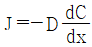
에서 D가 의미하는 것은?- 입계계수
- 체적계수
- 확산계수
- 농도계수
(정답률: 84%)
8. 금속의 응고 시 핵생성 속도를 N, 결정성장 속도를 G로 표시할 때, 미세한 결정립을 얻기 위한 조건으로 가장 적절한 것은?
- G가 작고, N이 큰 경우
- G와 N이 모두 큰 경우
- N이 작고, G가 큰 경우
- N과 G가 모두 작은 경우
(정답률: 82%)
9. 비트만스테덴(Widmanstätten) 조직을 설명한 것 중 옳은 것은?
- 충격값이 매우 높다.
- 풀림이나 담금질 등에 의해 시멘타이트와 마텐자이트로의 혼합조직으로 개선된다.
- 오스테나이트 입자가 미세하거나 낮은 온도로부터 냉각속도를 감소시키는 경우 발생한다.
- 오스테나이트 안에 판상 페라이트가 생겨 오스테나이트 격자 방향으로 일정한 길이를 가진다.
(정답률: 64%)
10. BCC와 HCP의 원자 충전율은 약 몇 % 인가?
- BCC : 34%, HCP : 68%
- BCC : 68%, HCP : 34%
- BCC : 68%, HCP : 74%
- BCC : 74%, HCP : 68%
(정답률: 84%)
11. 어떠한 축을 경계로 정반대의 원자배열을 나타내는 영역을 무엇이라 하는가?
- 슬립 영역
- 규칙 영역
- 결정립 영역
- 역위상 영역
(정답률: 89%)
12. 베이나이트(bainite) 변태에 대한 설명으로 틀린 것은?
- 항온변태에 의해 생성 가능하다.
- 연속냉각변태에 의해 생성 가능하다.
- 생성 온도에 따라 상부 베이나이트, 하부 베이나이트로 구분한다.
- 페라이트와 레데뷰라이트의 층상구조이다.
(정답률: 80%)
13. 2성분계 합금에서 액상(L)와 α고상이 냉각에 의한 반응으로 β고상을 생성시키는 반응은?
- 포정반응
- 편정반응
- 공정반응
- 공석반응
(정답률: 79%)
14. 냉간가공 시 철강 소재의 성질 변화에 대한 설명으로 틀린 것은?
- 항복강도가 증가한다.
- 전기저항이 커진다.
- 금속 내의 공격자점이 증가한다.
- 연성이 증가한다.
(정답률: 78%)
15. A, B 성분으로 된 2원계 합금에서 다상 결정 조직을 만들 수 없는 경우는?
- 전율 고용체의 경우
- 공정 합금계인 경우
- 중간상을 형성하는 경우
- 고용한도가 있으면서 중간상을 형성하는 경우
(정답률: 71%)
16. 규칙 및 불규칙격자에 관한 설명 중 틀린 것은?
- 규칙화가 진행되면 전기전도도가 증가한다.
- 규칙화가 진행될수록 탄성계수가 증가한다.
- 규칙화가 진행되면 일반적으로 경도가 감소한다.
- 규칙격자 합금을 소성가공하면 규칙도가 감소한다.
(정답률: 57%)
17. 금속 이온 결정에서 프렌켈 결함에 대한 설명으로 옳은 것은?
- 2개의 원자 공공이 결합한 것이다.
- 2개의 격자간 원자가 결합되어 있는 것이다.
- 하나의 공공과 격자간 원자가 쌍을 이룬 것이다.
- 격자간 불순물 원자와 치환형 불순물 원자의 선결함이다.
(정답률: 64%)
18. 다음 중 전율 고용형 상태도를 나타내는 합금은?
- Ag - Cu
- Co - Cu
- Cu - Ni
- Pb – Zn
(정답률: 71%)
19. 응축계(Condensed system)에서 적용되는 자유도를 구하는 식으로 옳은 것은? (단, F : 자유도, P : 상의 수, C : 성분의 수, 대기압 : 1기압으로 일정하다.)
- F = C + 1 - P
- F = C + 2 - P
- F = C + 3 - P
- F = C – P
(정답률: 78%)
20. 다음 중 확산속도와 대소 관계를 옳게 나열한 것은? (단, 빠른 것부터 느린 순서이다.)
- 표면확산 ＞ 입계확산 ＞ 격자확산
- 표면확산 ＞ 격자확산 ＞ 입계확산
- 격자확산 ＞ 입계확산 ＞ 표면확산
- 입계확산 ＞ 격자확산 ＞ 표면확산
(정답률: 81%)
2과목: 금속재료학
21. 오스테나이트계 스테인리스강의 입계부식을 방지하는 대책으로 적합하지 않은 것은?
- 고온으로부터 급랭한 후 400~700℃에서 장시간 유지하여 공랭한다.
- 크롬탄화물이 석출하지 않도록 탄소량을 0.03% 이하로 아주 낮게 유지한다.
- 1000~1150℃로 가열하여 크롬탄화물을 고용시킨 다음 급랭한다.
- C와 친화력이 Cr보다 큰 Ti, Nb, Ta 등의 안정화원소를 첨가한다.
(정답률: 70%)
22. 다음 그림과 같은 열처리법은?
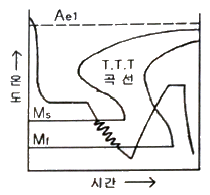
- Austempering
- Marquenching
- Ferriteching
- Martempering
(정답률: 72%)
23. 다음 중 분말의 유동도에 영향을 미치는 것과 가장 거리가 먼 것은?
- 분말의 비중
- 분말의 형상
- 분말의 인장강도
- 분말 수분 함유량
(정답률: 76%)
24. 다음 중 구상 흑연 주철을 만들기 위해 첨가하는 성분으로 가장 적절한 것은?
- Al
- Ni
- Sn
- Mg
(정답률: 73%)
25. 오스테나이트 온도까지 가열된 강을 펄라이트 형성 온도보다 낮고 마텐자이트 형성 온도보다 높은 온도에서 항온 변태처리한 것으로 조직이 베이나이트가 얻어지는 열처리는?
- 마템퍼링
- 오스템퍼링
- 마퀜칭
- 오스포밍
(정답률: 68%)
26. WC-TiC, WC-TaC 분말과 Co 분말을 혼합, 압축성형 후 약 900℃정도로 수소나 진공 분위기에서 가열하여 1400℃사이에서 소결시켜 절삭 공구로 이용되는 금속은?
- 스텔라이트
- 고속도강
- 모넬메탈
- 초경합금
(정답률: 75%)
27. 철-탄소 평형상태도에서 공정반응의 온도로 옳은 것은?
- 723℃
- 910℃
- 1130℃
- 1538℃
(정답률: 60%)
28. Al-Si 합금에서 불화 알칼리, 금속나트륨 등을 넣어 Si 결정입자를 미세화하기 위한 방법은?
- 개량처리
- Bayer처리
- Gross 처리
- 수인처리
(정답률: 65%)
29. 자기부상열차에서 사용되는 초전도재료에 나타나는 현상과 관계있는 것은?
- 암페르 법칙
- 전류제로 효과
- 반도체적 특성
- 마이스너 효과
(정답률: 81%)
30. 다음 중 가장 높은 온도를 측정할 수 있는 열전대 재료는?
- 철-콘스탄탄
- 크로멜-알루멜
- 백금-백금·로듐
- 구리-콘스탄탄
(정답률: 72%)
31. 재료의 연성을 알기 위한 것으로 구리판, 알루미늄판 등의 판재를 가압성형하여 변형능력을 시험하는 것은?
- 마모시험
- 에릭션시험
- 크리프시험
- 스프링시험
(정답률: 80%)
32. 다음 중 Ti 합금의 분류가 아닌 것은?
- α형 합금
- β형 합금
- γ형 합금
- α+β형 합금
(정답률: 84%)
33. 헤드필드(Hadfield) 강이라고 하며, 조직은 오스테나이트이고, 가공경화성이 우수한 특수강은?
- Cr 강
- Ni-Cr 강
- Cr-Mo 강
- 고 Mn 강
(정답률: 83%)
34. 탄소강 중에 포함되어 있는 인(P)의 영향에 대한 설명으로 틀린 것은?
- P는 철의 일부분과 결합하여 Fe3P 화합물을 형성한다.
- P는 탄소강의 경도, 인장강도를 감소시키며 고온취성을 일으켜 파괴의 원인이 된다.
- P로 인한 해는 강 중의 탄소량이 많을수록 크며 공구강에서는 P을 0.025% 이하로 관리한다.
- P는 철 입자의 조대화를 촉진한다.
(정답률: 65%)
35. 주철에서 칠(chill)화 방지, 흑연형상의 개량 및 기계적 성질의 향상 등을 목적으로 실시하는 용탕처리는?
- 접종처리
- 고온용해 처리
- 슬래그 처리
- 석회질소 처리
(정답률: 69%)
36. 콘스탄탄(constantan)에 관한 설명으로 옳은 것은?
- R monel 이라고 불린다.
- Cu, Fe, Pt 에 대한 열기전력 값이 낮다.
- 전기저항이 높고 온도계수가 낮은 합금이다.
- 구리에 60~70%의 니켈을 첨가한 합금이다.
(정답률: 59%)
37. 구리를 진공 용해하여 0.001~0.002%의 O2 함량을 가지며 유리의 봉착성이 좋아 진공관용 재료 및 전자지기 등에 이용되는 재료는?
- 무산소동
- 탈산동
- 전기동
- 정련동
(정답률: 80%)
38. 다음 중 압연 등과 같은 가공을 통해 성질을 개선시킬 수 있는 비열처리형 합금계는?
- 2000계 Al 합금
- 5000계 Al 합금
- 6000계 Al 합금
- 7000계 Al 합금
(정답률: 64%)
39. 마그네슘에 대한 설명으로 틀린 것은?
- 산에 침식된다.
- 밀도가 1.74g/cm3 이다.
- 녹는점이 약 650℃이다.
- 면심입방격자 금속이다.
(정답률: 74%)
40. 다음 중 불변강과 가장 거리가 먼 것은?
- Inver
- Elinvar
- Inconel
- Super invar
(정답률: 82%)
3과목: 야금공학
41. 다음 열역학의 기본식 중 틀린 것은? (단, A : Helmholtz 자유에너지, G : Gibbs 자유에너지, U : 내부에너지이다. μi는 i 성분의 화학 포텐셜이다.)
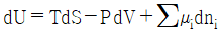
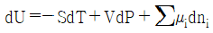
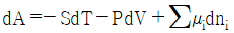
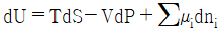
(정답률: 52%)
42. 이상기체 3mol이 500℃의 일정한 온도에서 1atm에서 0.2atm 까지 가역적으로 팽창할 때, 기체가 하는 일의 양은 약 몇 J인가? (단, 기체상수는 8.314 J/K·mol 이다.)
- 1⑤63
- 22198
- 31030
- 44396
(정답률: 60%)
43. 다음 내용에서 들어갈 내용으로 옳은 것은?
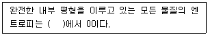
- 0℃
- 0 K
- 0 °F
- 25℃
(정답률: 81%)
44. 다음 중 상태 변화 과정에서 비가역도의 척도는?
- 엔트로피
- 최대 일
- 열팽창계수
- 엔탈피
(정답률: 78%)
45. 깁스의 상률에서 자유도 수(f)를 옳게 표시한 것은? (단, c는 성분 수이고, p는 상의 수이다.)
- f = c – p + 2
- f = p - c + 2
- f = c + p - 2
- f = c + p + 2
(정답률: 73%)
46. 제강 공정에서 용강의 탈인을 촉진하기 위한 조건이 아닌 것은?
- 염기도가 높아야 한다.
- 강욕온도가 낮아야 한다.
- 산화성 분위기를 유지해야 한다.
- 강재 중의 P2O5의 성분이 높아야 한다.
(정답률: 59%)
47. 엘링감(Ellingham) 도표에서 M(s) + O2(g) = MO2(s) 반응의 온도가 M의 비등점보다 높아지면 기울기의 변화는? (단, M은 일반적인 금속이다.)
- 기울기가 증가한다.
- 기울기가 감소한다.
- 변동이 없다.
- 증가한 뒤 감소한다.
(정답률: 63%)
48. 다음 식에서 1톤의 Fe를 얻는데 필요한 열량은 약 몇 kcal 인가?(문제 오류로 가답안 발표시 2번으로 발표되었지만 확정답안 발표시 모두 정답처리 되었습니다. 여기서는 가답안인 2번을 누르면 정답 처리 됩니다.)
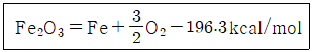
- 1760
- 1760 × 103
- 35⑤
- 35⑤ × 103
(정답률: 73%)
49. 완전 기체의 혼합 자유에너지의 변화
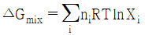
에서 여러 가지 성분의 기체가 자발적으로 혼합하려면, △Gmix은 어떻게 되어야 하는가?- △Gmix와 관계없다.
- △Gmix가 0 이어야 한다.
- △Gmix가 양의 값이어야 한다.
- △Gmix가 음의 값이어야 한다.
(정답률: 74%)
50. O2의 분압이 10-20atm 인 분위기 하에서 NiO와 Ni가 평형으로 공존하는 온도는 약 몇 K 인가?
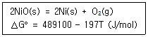
- 743 K
- 793 K
- 843 K
- 893 K
(정답률: 54%)
51. 다음 내화물 중 Al2O3의 성분이 가장 적은 것은?
- 납석 벽돌
- 샤모트 벽돌
- 뮬라이트 벽돌
- 포스테라이트 벽돌
(정답률: 56%)
52. N2(g) + 3H2(g) = 2NH3(g) 반응의 표준 자유에너지 변화(△G°)가 다름과 같을 때, 이 반응의 표준엔탈피변화(△H°, J)는?
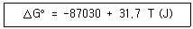
- 31.7 T
- 31.7
- -87030
- 2745
(정답률: 58%)
53. 부두아 곡선에 대한 설명으로 틀린 것은?
- CO2 + C → 2CO 반응은 carbon solution 반응이다.
- carbon solution 반응은 고온에서 일어나므로 반응속도가 비교적 빠르다.
- 압력이 높아지면 CO2 + C → 2CO 반응이 촉진된다.
- 고압 조업을 하면 carbon deposition 반응이 활성화 된다.
(정답률: 64%)
54. A-B 2원계 합금에서 라울의 법칙을 따를 때 이 합금에 대한 설명으로 옳은 것은?
- XB의 값에 관계없이 γB은 1 이다.
- XB의 값에 관계없이 γB은 0 이다.
- XB의 값에 관계없이 aB은 1 이다.
- XB의 값에 관계없이 aB은 0 이다.
(정답률: 63%)
55. 다음 연소 반응식 중 틀린 것은?
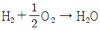
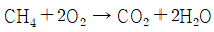
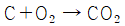
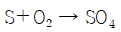
(정답률: 81%)
56. 제겔 콘 27의 표준온도는 몇 ℃ 인가?
- 1580
- 1600
- 1640
- 1660
(정답률: 57%)
57. 염기성 산화물로 구성되어 있는 것은?
- SiO2 - CaO - MnO
- CaO – MgO - P2O5
- CaO – Al2O3 - SiO2
- Na2O – CaO – MnO
(정답률: 47%)
58. 따뜻한 물과 찬 물이 각각의 비커에 담겨 있을 때, 이 두 비커를 혼합한다면 혼합과정에서의 엔트로피 변화는?
- 증가한다.
- 감소한다.
- 변화가 없다.
- 알 수 없다.
(정답률: 71%)
59. 정압 열용량(CP)과 정적 열용량(CV)의 비(CP/CV)에 대한 설명으로 옳은 것은?
- 0 이다.
- 1보다 큰 값이다.
- 1보다 작은 값이다.
- 1보다 클 수도 있고 작을 수도 있다.
(정답률: 62%)
60. 다음의 평형반응을 오른쪽으로 진행시키기 위한 조건은? (단, △H° = -192kJ 이다.)
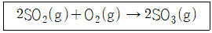
- 압력 감소와 온도 증가
- 압력 증가와 온도 감소
- 압력 증가와 온도 증가
- 압력 감소와 온도 감소
(정답률: 62%)
4과목: 금속가공학
61. 일반적인 금속의 푸아송비 범위로 옳은 것은?
- 0.12~0.20
- 0.28~0.35
- 0.72~0.84
- 1.13~1.35
(정답률: 66%)
62. 단위전위인 Burgers 벡터가 격자의 최고원자 밀도 방향과 평행할 때 그 전위가 최소의 에너지를 갖는 것은?
- 적층전위
- 단극전위
- 부분전위
- 완전전위
(정답률: 68%)
63. 인장시험에서 재료의 소성변형거동 중 균일신장이 일어나는 곳이 아닌 것은?
- 탄성한계
- 상부항복점
- 하부항복점
- 파단점
(정답률: 71%)
64. 항복점 현상과 관련된 거동으로 금속을 냉간가공하고 비교적 저온에서 가열할 때 금속의 강도가 증가하고 연성이 감소하는 것은?
- 시효경화
- 변형시효
- 석출경화
- 고용경화
(정답률: 62%)
65. 재료의 가공경화는 다음 중 어떤 현상에 기인하는가?
- 결정립 크기의 감소
- 불용성 제2상의 석출
- 재료 내 전위밀도의 증가
- 불순물 원자에 의한 전위 고착
(정답률: 72%)
66. 압연 시 작업 롤(Roll)의 회전속도와 판재의 수평 이동속도가 같아지는 위치는?
- 입구점
- 출구점
- 중립점
- 슬립점
(정답률: 75%)
67. 면심입방격자의 슬립면과 슬립방향으로 옳은 것은?
- 슬립면 (110), 슬립방향 [101]
- 슬립면 (120), 슬립방향 [111]
- 슬립면 (111), 슬립방향 [110]
- 슬립면 (110), 슬립방향 [111]
(정답률: 71%)
68. 인장시험 시 연신율에 대한 설명 중 틀린 것은?
- 시편의 단면적이 적을수록 연신율은 감소한다.
- 시편의 초기 표점거리가 짧을수록 연신율은 감소한다.
- 크기가 다른 시편의 연신율을 비교하기 위해서는 시편의 기하학적 형태가 같도록 해야 한다.
- 네킹(necking) 현상의 발생은 연신율과 단면감소율 간의 양적 환산을 어렵게 한다.
(정답률: 61%)
69. 충격 시험에 관한 설명으로 틀린 것은?
- 취성재료일수록 충격 에너지의 값이 크다.
- 샤르피형 충격시험기가 있다.
- 동적 하중에 대한 시험이다.
- 충격 시험편에는 노치가 있다.
(정답률: 74%)
70. 다음 중 2차 크리프의 특징을 설명한 것으로 옳은 것은?
- 가공경화 후 회복이 서로 균형을 이루는 구간
- 재료의 저항성이 재료 변형에 의해 증가하는 구간
- 내부 공동 형성으로 유효 단면적이 감소하는 구간
- 전위의 증식속도가 소멸속도보다 빨리 이루어지는 구간
(정답률: 65%)
71. 다음 중 스프링 백(spring back)의 설명으로 옳은 것은?
- 소성변형이 클수록 스프링 백이 감소한다.
- 탄성계수가 작을수록 스프링 백이 감소한다.
- 항복응력이 클수록 스프링 백이 감소한다.
- 스프링 백은 탄성회복에 의한 변형률의 변화로 생긴다.
(정답률: 48%)
72. 다음 중 판재의 프레스 성형에서 나타나는 결함인 오렌지 필의 생성원인과 가장 거리가 먼 것은?
- 루더스 밴드의 형성 때문
- 표면의 결정립 수가 적기 때문
- 표면의 결정립이 조대하기 때문
- 결정방향에 따라 다르게 변형하기 때문
(정답률: 60%)
73. 소성변형에서 진응력(σ), 공칭응력(S), 공칭변형률(e) 사이의 관계식으로 옳은 것은?
- σ = 2S(1 + 5e)
- σ = S(1 + 2e)
- σ = S(1 + 0.5e)
- σ = S(1 + e)
(정답률: 66%)
74. Portevin LeChatelier 효과에 관한 설명 중 틀린 것은?
- 응력-변형률 곡선상에 나타나는 톱니모양의 변형을 말한다.
- 탄소강인 경우 230~370℃에서 소성변형시키는 과정에서 나타난다.
- 상온의 시효과정에서 나타나는 불균일 변형을 말한다.
- Portevin LeChatelier 효과로 인해 연성이 감소하고 충격인성이 감소하여 취약해 진다.
(정답률: 42%)
75. HCP 금속결정에서 슬립면이 (0001)이며, 슬립방향이
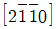
일 때, 슬립계는 몇 개인가?- 2개
- 3개
- 6개
- 10개
(정답률: 55%)
76. 다음 중 열간가공의 일반적인 특징으로 틀린 것은?
- 가공경화가 쉽게 제거된다.
- Ti과 같은 활성금속은 공기와 차단된 상태에서 가공해야 한다.
- 주조상태보다 인성과 연성이 증가한다.
- 주조 조직의 화학적 불균일성이 증가한다.
(정답률: 69%)
77. 지름이 6mm, 길이가 200mm인 철사가 100N의 인장력을 받을 때 길이가 2mm 늘어났다가 하중이 제거되었을 때 원상태로 돌아갔다면, 이 철사의 탄성계수는 약 몇 N/mm2 인가?
- 153
- 253
- 354
- 453
(정답률: 43%)
78. Hall-Petch식으로 옳은 것은? (단, σ는 항복응력, σo는 전위의 운동을 방해하는 마찰응력, d는 결정립의 지름, k는 상수이다.)
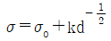
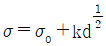
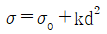
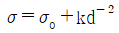
(정답률: 67%)
79. 후크(Hooke)의 법칙에서 응력과 연신율의 비는 탄성한계 내에서 일정한 값을 가지는데, 이 값은 무엇인가?
- 푸아송비
- 탄성한계
- 확산계수
- 탄성계수
(정답률: 65%)
80. 전단저항이 450MPa 이고, 두께가 2mm인 판재를 원둘레 길이가 200mm인 원판으로 자르는데 필요한 전단 하중은 약 몇 kN인가?
- 180
- 200
- 340
- 450
(정답률: 48%)
5과목: 표면공학
81. 철강, 아연 도금 제품 및 알루미늄 등을 인산염액에 처리하여 내식성을 지니는 피막을 형성하는 기술은?
- 도금처리
- 파커라이징
- 경질피막처리
- 무전해도금처리
(정답률: 71%)
82. 다음 중 PVD의 종류가 아닌 것은?
- 음극 스퍼터링
- 템퍼칼라
- 이온도금
- 진공증착법
(정답률: 61%)
83. DC 스퍼터링(Sputtering)에 대한 설명으로 틀린 것은?
- 비교적 구석구석 도금이 잘 된다.
- 조성이 복잡한 것도 적용시킬 수 있다.
- 고에너지로 기판에 들어오게 되므로 밀착강도가 높다.
- 전류량과 생성피막의 두께가 반비례하므로 컨트롤이 쉽다.
(정답률: 77%)
84. CVD법의 특징을 설명한 것 중 틀린 것은?
- 처리온도가 약 1000℃ 정도로 높다.
- 파이프의 내면 미립자 등에도 피복이 가능하다.
- 형성된 피막은 모재와 확산 또는 반응을 일으켜 밀착성이 매우 좋다.
- 피막의 원료가 액체상태로 공급되므로 복잡한 형상의 물체도 비교적 쉽게 균일한 피막을 얻을 수 있다.
(정답률: 62%)
85. 용접제품의 응력제거 풀림에 의하여 기대되는 효과가 아닌 것은?
- 치수의 변화 방지
- 용접잔류응력의 제거
- 노치인성 및 강도의 증가
- 응력부식에 대한 저항력 감소
(정답률: 65%)
86. 진공의 단위가 아닌 것은?
- bar
- mmHg
- Pa
- kWh
(정답률: 74%)
87. 주사전자현미경에 사용되는 전자총에 대한 설명으로 옳은 것은?
- 물질에 열을 가하여 일함수 이상의 에너지를 제공하면 전자는 고유의 위치로부터 벗어나 공중으로 방출된다.
- 열방사형 전자총을 사용한 주사전자현미경이 전계방사형 전자총을 사용한 것보다 분해능이 뛰어나다.
- 열방사형 전자총은 높은 전계를 가하여 에너지를 공급하여 전자를 방출시킨다.
- 열방사형 전자총의 음극에 사용되는 재료는 일함수 값이 커야 한다.
(정답률: 67%)
88. 다음 중 공업적으로 용융도금에 적합하지 않는 금속은?
- Zn
- Sn
- Ti
- Al
(정답률: 65%)
89. Al합금, Cu합금, Ti합금 등을 시효 처리 전에 실시하는 열처리로서 합금 중의 용질원자를 모재에 고용시키는 방법은?
- 심냉처리
- 용체화처리
- 수인처리
- 파텐팅처리
(정답률: 73%)
90. 전기도금이나 무전해도금 피막 중에 미립자를 분산시켜 도금하는 분산도금의 분산재로 적합하지 않은 것은?
- CuO
- Al2O3
- SiC
- 다이아몬드
(정답률: 52%)
91. 다음 중 양극 산화 처리하기 가장 어려운 금속은?
- Ni
- Al
- Mg
- Ti
(정답률: 39%)
92. 심냉처리에 관한 설명 중 틀린 것은?
- 공구강에 필요한 열처리이다.
- 심냉처리하면 퀜칭경도가 증가된다.
- 잔류 오스테나이트를 펄라이트로 변태시킨다.
- 잔류 오스테나이트가 존재하면 퀜칭 경도가 저하된다.
(정답률: 63%)
93. 오스테나이트계 스테인리스강을 용접 후 950℃에서 열처리를 할 필요가 있는 경우에 해당되는 것은?
- 치수 및 형상의 변화가 필요할 때
- 담금질에 의한 경화가 필요할 때
- 내식성의 향상이 필요할 때
- 질화물의 석출이 필요할 때
(정답률: 65%)
94. 다음 중 CVD방법의 종류가 아닌 것은?
- 고압 CVD
- MO CVD
- 감압 CVD
- 플라즈마 CVD
(정답률: 47%)
95. 다음 분위기 가스 중 침탄성 가스가 아닌 것은?
- CO
- CO2
- CH4
- C3H8
(정답률: 68%)
96. 도금하려는 금속의 석출 전압보다 낮은 전압으로 도금용액의 불순물을 제거하는 방법은?
- 냉각법
- 약전해법
- 치환반응
- 활성탄처리
(정답률: 81%)
97. 전해처리 의한 양극산화처리 방법이 아닌 것은?
- 황산법
- 니켈산법
- 크롬산법
- 옥살산법
(정답률: 55%)
98. 염욕에 의한 열처리 시 중성염욕 중에서 강재의 침식을 일으키는 원인이 아닌 것은?
- 고온에서 대기 중의 산소 존재
- 염욕에 함유된 유해 불순물
- 염욕 자체의 흡수성에 의한 수분
- 1000℃ 이상의 고온 염욕 속에 칼슘-실리콘
(정답률: 69%)
99. 용융아연도금에 대한 설명으로 틀린 것은?
- 철은 아연보다 이온화 경향이 크기 때문에 아연이 먼저 소모되는 동안 철이 보호를 받는다.
- 아연은 공기 중에서 부식속도가 매우 느리다.
- 수용액 중에 염화물이 있으면 보호 피막이 형성되지 않는다.
- 산성이나 알칼리 수용액에서 부식된다.
(정답률: 57%)
100. 주사전자현미경의 특징으로 틀린 것은?
- 시편의 홀더로 알루미늄과 구리가 사용된다.
- 비전도성 재료는 금속박막코팅이 필요하다.
- 시편은 매우 얇은 박막형태이여야 한다.
- 2차 전자를 이용하여 대상물의 형상을 이미지화 한다.
(정답률: 65%)